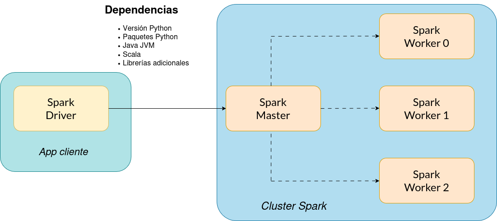

7 Apache Spark
Tutorial sobre instalación y configuración de Apache Spark, tecnología de referencia para procesamiento distribuido de datos.
7.1 Introducción
Apache Spark (https://spark.apache.org/) es un motor unificado de procesamiento de datos compatible con múltiples lenguajes de programación (Scala, Java, Python, R) que puede ejecutarse en una sola máquina o en un cluster de computación distribuida. Además, Spark es compatible tanto con el paradigma de procesamiento de datos batch como con el de procesamiento de flujos de datos (streaming), utilizando el mismo motor de procesado en ambos casos.
Entre sus principales casos de aplicación cabe destacar:
Creación de grafos de procesamiento de datos escalables, con una interfaz de programación que simplifica en gran medida la ejecución de tareas en un entorno distribuido.
Posibilidad de ejecutar consultas ANSI SQL nativas sobre conjuntos de datos en múltiples formatos sin necesidad de utilizar bases de datos o productos de datawarehouse, directamente sobre la información en crudo.
Capadidad para escalar el cómputo distribuido con datos a nivel de petabytes, sin que sea preciso recurrir a técnicas de filtrado de datos o submuestreo.
Integración de un extenso catalogo de algoritmos de aprendizaje máquina adaptados para su ejecución desde en un portátil hasta en entornos distribuidos y tolerantes a fallos con miles de nodos.
Gracias a su extrema versatilidad y compatiblidad con una larga lista de proyectos y tecnologías habituales en ciencia de datos, Apache Spark se ha convertido en uno de los motores de referencia para el procesamiento de datos en la actualidad, tomando el relevo de Hadoop como solución de referencia en la mayoría de stacks tecnológicos del mercado y arquitecturas en la nube.
7.1.1 Versiones principales
A finales de abril de 2025 la versión estable de Spark es la 3.5.5, aunque ya existe una preview de la próxima major version del proyecto, Spark 4.0.0, que se prevé que esté disponible en junio de 2025.
A pesar de que la nueva versión principal vendrá cargada de muchas novedades, muchos condicionantes, especialmente el de las dependencias software que explicamos en la siguiente sección, obligan a que seamos prudentes y recomendemos utilizar versiones de Spark un poco anteriores y más probadas.
En particular, para la asignatura se emplea Spark 3.5.1, puesto que esta versión funciona bien tanto con Python 3.11 como con Java SDK 17 y Scala 2.12. Por ejemplo, Spark 3.5.5 está preparado para utilizar Python 3.12 (que viene instalado por defecto en la mayoría de imágenes Docker disponibles para esa versión), lo que obligaría a utilizar esa misma versión de Python en los restantes componentes de nuestro proyecto de programación, como vemos a continuación.
7.1.2 Dependencias software
Aunque Apache Spark evoluciona con gran rapidez y genera nuevas versiones con bastante frecuencia (ciclos de seis meses, en muchos casos), el proyecto es un componente software extremadamente complejo y sensible a un gran número de dependencias muy concretas que se deben satisfacer de forma precisa si aspiramos a que nuestras aplicaciones funcionen correctamente.

Como podemos observar en la Figura 7.1, una aplicación de Spark que funciona en modo interactivo en nuestro portátil, conectada a un nodo máster que da acceso a un cluster de tres workers de Spark, debe satisfacer múltiples depedencias software para poder funcionar correctamente.
Python: si nuestro programa Spark está escrito en Python es necesario que el número de versión del intérprete (major y minor) sea idéntico tanto en nuestro equipo local (driver) como en el nodo master y todos los nodos worker de Spark.
También es importante cerciorarse de que la versión de Spark que utilicemos sea compatible con la versión de Python instalada. Cada versión de Spark suele ser compatible con varias versiones de Python a partir de un determinado número (p.ej. >=3.11), pero no hacia atrás.
Del mismo modo, si estamos utilizando imágenes de contenedores para desplegar nuestra instalación de Spark, es importante comprobar qué versión de Python está instalada en dicha imagen, ya que determina la versión que debe utilizarse en todos los nodos participantes.
Java Virtual Machine (JVM): aunque nuestro programa esté escrito en Python, Spark lo traduce en tiempo real a código Scala, que debe ser ejecutado sobre una máquina virtual Java (JVM). Resulta curioso comprobar que, debido a este requisito funcional, también es imprescindible que la JVM esté previamente instalada en todos los nodos de la aplicación (driver, master y workers) y que la versión de la JVM coincida en todos ellos.
- En consecuencia, debemos verificar que versión de JVM está instalada en la imagen Docker que vayamos a emplear para el despliegue, y que versión de JVM se ha utilizado para compilar las librerías de Spark que vamos a usar. En algunos casos, se publican varias versiones de la misma imagen Docker de Spark compiladas contra diferentes versiones de JVM para garantizar la compatibilidad con diferentes entornos de producción.
Scala: en la asignatura vamos a utilizar, primordialmente, Python como lenguaje de programación. Sin embargo, para ejecutar cualquier ejemplo escrito en Scala es obligatorio verificar:
- Que la misma versión de Scala esté instalada en todos los nodos participantes (driver, master y workers).
- Que dicha versión de Scala sea compatible con la JVM instalada en cada sistema.
- Que la versión de Spark utilizada haya sido compilada con la misma versión de Scala instalada en cada sistema.
Librerías Spark adicionales: si nuestro programa necesita alguna librería adicional de Spark para funcionar es necesario que indiquemos estas dependencias al ejecutar nuestro programa para que se descarguen en los nodos worker del cluster Spark.
Todos estos requisitos también deben cumplirse en caso de que nuestra aplicación se envíe al cluster para ejecutarse de forma desatendida (Spark cluster mode).
7.2 Imágenes Docker
7.2.1 Bitnami Spark
Imagen docker.io/bitnami/spark: https://hub.docker.com/r/bitnami/spark.
Para la ejecución de tareas de las prácticas con Apache Spark vamos a emplear como imagen Docker de referencia la generada por Bitnami, una organización que forma parte de VMware Tanzu. Ofrece imágenes bastante populares y que se mantienen muy actualizadas, lo que es positivo en proyectos como Spark con un elevado ritmo de publicación de nuevas versiones. Las imágenes de Bitnami están basadas en minideb, una versión minimalista de Debian GNU/Linux especialmente concebida para contenedores.
En particular, usaremos la versión 3.5.1 de esta imagen, que incluye dicha versión de Apache Spark junto con Python 3.11 y la JVM 17.
La imagen permite alterar los valores por defecto de muchas variables de configuración para Spark. La mejor manera de hacer esto es usando un archivo Docker Compose para definir nuestros contenedores.
El siguiente extracto de código muestra un ejemplo de cómo incluir estas variables de configuración en un archivo docker-compose.yaml.
spark:
...
environment:
- SPARK_MODE=master
- SPARK_MASTER_URL=spark://spark-master:7077
...7.2.2 Jupyter Spark
Existe otra imagen del proyecto Jupyter (1), que incluye un entorno para ejecución de notebooks de Python, pero está muy desactualizada. No aconsejamos su utilización.
Como alternativa (2), se puede generar un contenedor personalizado que incluya Python y los paquetes de Jupyter Lab, junto con una versión actualizada de Spark.
7.3 Entorno Docker Compose
Por último, recogemos todos los pasos a seguir para configurar un entorno completo de ejecución de Spark en modo cluster, pero utilizando Docker Compose para generar todos los contenedores en nuestra máquina local.
7.3.1 Instalación y/o activación de la JVM
Puesto que la imagen bitnami/spark usa la JVM 17, debemos usar la misma versión de máquina virtual de Java en nuestro sistema anfitrión. La mejor opción es instalar Java OpenJDK 17 mediante los paquetes APT estándar de los repositorios oficiales de Ubuntu.
Si tenemos varias JVM instaladas simultáneamente en nuestro sistema, entonces debemos seleccionar la que queremos usar con nuestros programas. Hay dos opciones para esto, mostradas en el tutorial enlazado arriba:
Configurar los valores de las variables de entorno
JAVA_HOMEyPATH(si ejecutamos desde la terminal) o sólo de la primera variable (dentro de nuestros programas Python) para que se selecciones la versión correcta de la JVM.Ejecutar el comando
sudo update-java-alternatives(requiere privilegios de root) para seleccionar la JVM a emplear. Esta configuración será efectiva en todo el sistema (no solo en esa terminal), hasta que volvamos a modificar la configuración.
7.3.2 Creación de un nuevo proyecto uv
Debemos crear en nuestra máquina anfitriona un nuevo proyecto Python utilizando la versión del intérprete que coincide con la instalada en la imagen que usan los contenedores.
$ uv init pyspark-351 --python 3.11
$ cd pyspark-3517.3.3 Instalación de pyspark en el anfitrión
Ahora instalamos la versión del paquete Python pyspark que coincide también con la instalada en la imagen Docker que estamos usando.
$ uv venv
$ source .venv/bin/activate
(pyspark-351)$ uv pip install pyspark==3.5.17.3.4 Ejecución de servicios del entorno Docker Compose
Por último, creamos un archivo docker-compose.yaml con toda la información de configuración de nuestro entorno, que consta de un nodo Spark actuando como master o coordinador y otro nodo como worker.
version: '3.7'
services:
spark:
#image: bitnami/spark:3.5.1
build: .
environment:
- SPARK_MODE=master
- SPARK_RPC_AUTHENTICATION_ENABLED=no
- SPARK_RPC_ENCRYPTION_ENABLED=no
- SPARK_LOCAL_STORAGE_ENCRYPTION_ENABLED=no
- SPARK_SSL_ENABLED=no
- SPARK_USER=spark
ports:
- '8080:8080'
- '7077:7077'
# MUST BE OFF VPN FOR THIS TO WORK
extra_hosts:
- "host.docker.internal:${HOST_IP}"
spark-worker:
#image: bitnami/spark:3.5.1
build: .
environment:
- SPARK_MODE=worker
- SPARK_MASTER_URL=spark://spark:7077
- SPARK_WORKER_MEMORY=2G
- SPARK_WORKER_CORES=2
- SPARK_RPC_AUTHENTICATION_ENABLED=no
- SPARK_RPC_ENCRYPTION_ENABLED=no
- SPARK_LOCAL_STORAGE_ENCRYPTION_ENABLED=no
- SPARK_SSL_ENABLED=no
- SPARK_USER=spark
extra_hosts:
- "host.docker.internal:${HOST_IP}"Y también creamos otro fichero Dockerfile en el que podemos configurar a nuestro gusto la imagen de Spark que usamos en los contenedores. Por ejemplo, aquí se muestra cómo copiar dentro del contenedor un fichero log4j2.properties para configurar el nivel de detalle de los logs que imprime Spark por la terminal.
FROM bitnami/spark:3.5.1
# Optional: custom logging
COPY log4j2.properties /opt/bitnami/spark/conf/log4j2.properties
# Since the cluster will deserialize your app and run it, the cluster need similar depenecies.
# ie. if your app uses numpy
#RUN pip install numpyEl contenido del fichero log4j2.properties es el siguiente.
mstatus = error
name = PropertiesConfig
# Define appenders
appender.console.type = Console
appender.console.name = ConsoleAppender
appender.console.target = SYSTEM_ERR
appender.console.layout.type = PatternLayout
appender.console.layout.pattern = %d{yyyy-MM-dd HH:mm:ss} %-5p %c{1}:%L - %m%n
# Set root logger level
rootLogger.level = error
rootLogger.appenderRef.stdout.ref = ConsoleAppender
# Set PySpark logging level to INFO to see PySpark-specific logs
logger.pyspark.name = org.apache.spark.api.python
logger.pyspark.level = warn
logger.pyspark.appenderRef.console.ref = ConsoleAppender
# Set Spark SQL logging level to INFO for visibility into Spark SQL operations
logger.sparksql.name = org.apache.spark.sql.execution
logger.sparksql.level = warn
logger.sparksql.appenderRef.console.ref = ConsoleAppender
# Optionally, adjust the logging level for other Spark components as needed
logger.sparkcontext.name = org.apache.spark.SparkContext
logger.sparkcontext.level = warn
logger.sparkcontext.appenderRef.console.ref = ConsoleAppender
Además, debemos configurar una variable de entorno HOST_IP con la dirección IP de la máquina anfitriona en la que se ejecutan los contenedores.
$ export HOST_IP=10.20.30.40Ejecutamos los contenedores desde una terminal con Podman.
$ podman-compose up --buildSi no se producen errores, deberíamos tener dos contenedores ejecutándose como se muestra a continuación.
(pyspark-351) jfelipe@helium:~/Docencia/URJC/Grado/SDPD2/lab/podman/spark/pyspark-351$ podman ps
CONTAINER ID IMAGE COMMAND CREATED STATUS PORTS NAMES
52d2b63c7f24 localhost/pyspark-351_spark:latest /opt/bitnami/scri... 17 seconds ago Up 15 seconds 0.0.0.0:7077->7077/tcp, 0.0.0.0:8080->8080/tcp pyspark-351_spark_1
6b51de37c28d localhost/pyspark-351_spark-worker:latest /opt/bitnami/scri... 16 seconds ago Up 14 seconds pyspark-351_spark-worker_17.3.5 Ejecución del ejemplo de prueba
Al instalar el paquete pyspark en nuestro entorno virtual de Python para este proyecto se han incluido múltiples ejecutables en el directorio .venv/bin/, con programas que permiten interactuar con instalaciones de Spark desde Python.
El ejecutable .venv/bin/spark-submit permite enviar a un cluster de Spark un programa Python para su ejecución.
(pyspark-351) jfelipe@helium:~/Docencia/URJC/Grado/SDPD2/lab/podman/spark/pyspark-351$ .venv/bin/spark-submit --help
Usage: spark-submit [options] <app jar | python file | R file> [app arguments]
Usage: spark-submit --kill [submission ID] --master [spark://...]
Usage: spark-submit --status [submission ID] --master [spark://...]
Usage: spark-submit run-example [options] example-class [example args]
Options:
--master MASTER_URL spark://host:port, mesos://host:port, yarn,
k8s://https://host:port, or local (Default: local[*]).
...En nuestro caso el programa que ejecutamos es hello-spark.py.
from pyspark.sql import SparkSession
import os
def main():
os.environ["JAVA_HOME"]="/usr/lib/jvm/java-1.17.0-openjdk-amd64"
# Initialize SparkSession
spark = SparkSession.builder \
.appName("HelloWorld") \
.master("spark://localhost:7077") \
.getOrCreate()
spark.sparkContext.setLogLevel("ERROR")
# Create an RDD containing numbers from 1 to 10
numbers_rdd = spark.sparkContext.parallelize(range(1, 1000))
# Count the elements in the RDD
count = numbers_rdd.count()
print(f"Count of numbers from 1 to 1000 is: {count}")
# Stop the SparkSession
spark.stop()
if __name__ == "__main__":
main()Este programa configura internamente un host y un puerto específicos en los que está esperando un manager de Spark que acepta tareas. Para este ejemplo, el servicio Docker Compose está en localhost y escucha en el puerto estándar 7077.
(pyspark-351) jfelipe@helium:~/Docencia/URJC/Grado/SDPD2/lab/podman/spark/pyspark-351$ .venv/bin/spark-submit hello-spark.py
...
Count of numbers from 1 to 1000 is: 999